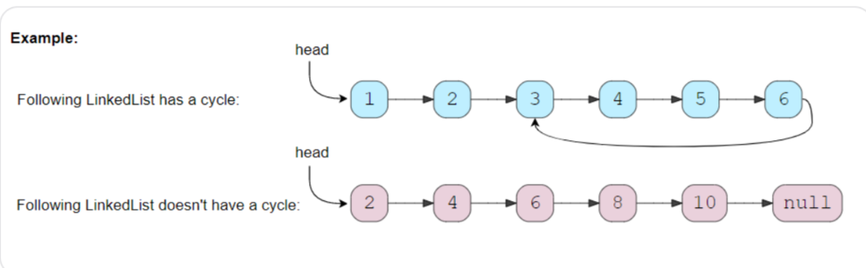
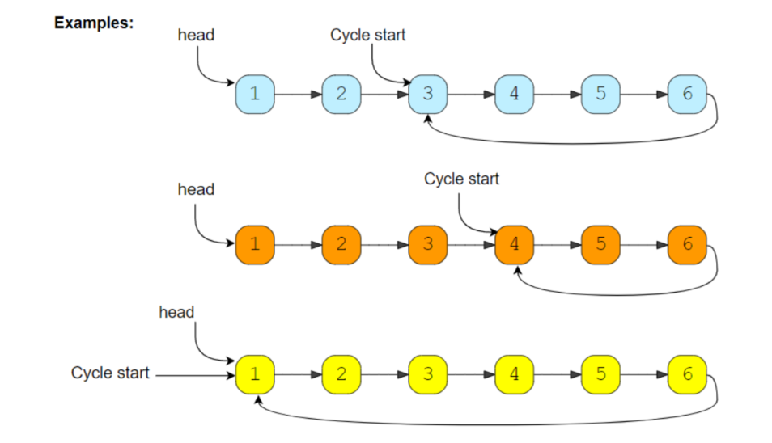
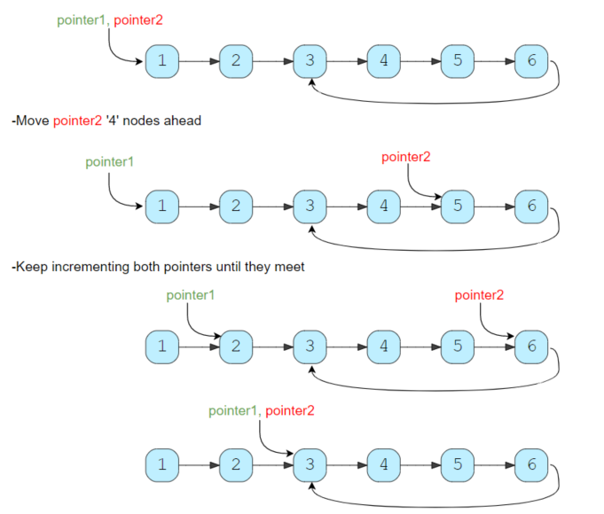

Pattern-4 Fast and Slow Pointers
1、introduction
移动两个速度不同的指针，常在环形数组和链表问题中使用。
2、linkedlist cycle
判断链表是否有环

code:
bool hasCycle(ListNode *head) {
ListNode *fast = head;
ListNode *slow = head;
while (fast != NULL && fast->next != NULL) {
fast = fast->next->next;
slow = slow->next;
if (slow == fast) {
return true;
}
}
return false;
}
Time Complexity : O(N)
Space Complexity : O(1)
相似问题：
求带环链表环的长度
code：
int calculateLength(ListNode *slow) {
ListNode *current = slow;
int cycleLength = 0;
do {
current = current->next;
cycleLength++;
} while (current != slow);
return cycleLength;
}
int findCycleLength(ListNode *head) {
ListNode *fast = head;
ListNode *slow = head;
while (fast != NULL && fast->next != NULL) {
fast = fast->next->next;
slow = slow->next;
if (slow == fast) {
return calculateLength(slow);
}
}
return 0;
}
Time Complexity : O(N)
Space Complexity : O(1)
3、start of linkedlist cycle
求带环链表的起点

code:
ListNode *findStart(ListNode *head, int cycleLenghth) {
ListNode *pointer1 = head;
ListNode *pointer2 = head;
while (cycleLenghth > 0) {
pointer2 = pointer2->next;
cycleLenghth--;
}
while (pointer1 != pointer2) {
pointer1 = pointer1->next;
pointer2 = pointer2->next;
}
return pointer1;
}
int calculateLength(ListNode *slow) {
ListNode *current = slow;
int cycleLength = 0;
do {
current = current->next;
cycleLength++;
} while (current != slow);
return cycleLength;
}
ListNode *findCycleStart(ListNode *head) {
int cycleLength = 0;
ListNode *fast = head;
ListNode *slow = head;
while (fast != NULL && fast->next != NULL) {
fast = fast->next->next;
slow = slow->next;
if (slow == fast) {
cycleLength = calculateLength(slow);
break;
}
}
return findStart(head, cycleLength);
}

Time Complexity : O(N)
Space Complexity : O(1)
4、happy number
判断整数是否是happy number
快乐数（happy number）有以下的特性：在给定的进位制下，该数字所有数位(digits)的平方和，得到的新数再次求所有数位的平方和，如此重复进行，最终结果必为1
input: 23
output: true
explanations: 2*2 + 3*3 = 4 + 9 = 13
1*1 + 3*3 = 1 + 9 = 10
1*1 + 0*0 = 1 + 0 = 1
input: 12
output: false
explanations: 5->25->29->85->89->145->42->20->4->16->37->58->89 89重复
code：
int findSquareSum(int num) {
int sum = 0;
int digit;
while (num > 0) {
digit = num % 10;
sum += digit * digit;
num /= 10;
}
return sum;
}
int find(int num) {
//如果不是happy number，在不断生成新数中，定有重复
int slow = num;
int fast = num;
do {
slow = findSquareSum(slow);
fast = findSquareSum(findSquareSum(fast));
} while (slow != fast);
return slow == 1;
}
Time Complexity : O(log N)
Space Complexity : O(1)
5、middle of the linkedlist
求链表的中间节点
input: 1 -> 2 -> 3 -> 4 -> 5-> NULL
output: 3
input: 1 -> 2 -> 3 -> 4 -> 5-> 6 -> NULL
output: 4
code:
ListNode *findMiddle(ListNode *head) {
ListNode *fast = head;
ListNode *slow = head;
while (fast != NULL && fast->next != NULL) {
fast = fast->next->next;
slow = slow->next;
}
return slow;
}
Time Complexity : O(N)
Space Complexity : O(1)
6、palindrome linkedlist
判断链表是否对称
input: 2 -> 4 -> 6 -> 4 -> 2-> NULL
output: true
input: 2 -> 4 -> 6 -> 4 -> 2 -> 2 -> NULL
output: false
code:
ListNode *reverse(ListNode *head) {
ListNode *prev = NULL;
while (head != NULL) {
ListNode *next = head->next;
head->next = prev;
prev = head;
head = next;
}
return prev;
}
bool isPalindrome(ListNode *head) {
if (head == NULL || head->next == NULL) {
return true;
}
ListNode *fast = head;
ListNode *slow = head;
while (fast != NULL && fast->next != NULL) {
fast = fast->next->next;
slow = slow->next;
}
ListNode *headSecondHalf = reverse(slow);
ListNode *copyHeadSecondHalf = headSecondHalf;
while (head != NULL && headSecondHalf != NULL) {
if (head->val != headSecondHalf->val) {
break;
}
head = head->next;
headSecondHalf = headSecondHalf->next;
}
reverse(copyHeadSecondHalf);
if (head == NULL || headSecondHalf == NULL) {
return true;
}
return false;
}
Time Complexity : O(N)
Space Complexity : O(1)
7、rearrange a linkedlist
给定一个单链表 L：L0→L1→…→Ln-1→Ln ， 将其重新排列后变为： L0→Ln→L1→Ln-1→L2→Ln-2→…
你不能只是单纯的改变节点内部的值，而是需要实际的进行节点交换。
input: 2 -> 4 -> 6 -> 8 -> 10-> 12 -> NULL
output: 2 -> 12 -> 4 -> 10-> 6 -> 8 -> NULL
input: 2 -> 4 -> 6 -> 8 -> 10 -> NULL
output: 2 -> 10 -> 4 -> 8 -> 6 -> NULL
code:
ListNode *reverse(ListNode *head) {
ListNode *prev = NULL;
while (head != NULL) {
ListNode *next = head->next;
head->next = prev;
prev = head;
head = next;
}
return prev;
}
void reOrder(ListNode *head) {
if (head == NULL || head->next == NULL) {
return;
}
ListNode *fast = head;
ListNode *slow = head;
while (fast != NULL && fast->next != NULL) {
fast = fast->next->next;
slow = slow->next;
}
ListNode *headSecondHalf = reverse(slow);
ListNode *headFirstHalf = head;
while (headFirstHalf != NULL && headSecondHalf != NULL) {
ListNode *temp = headFirstHalf->next;
headFirstHalf->next = headSecondHalf;
headFirstHalf = temp;
temp = headSecondHalf->next;
headSecondHalf->next = headFirstHalf;
headSecondHalf = temp;
}
if (headFirstHalf != NULL) {
headFirstHalf->next = NULL;
}
}
Time Complexity : O(N)
Space Complexity : O(1)
8、cycle in a Circular array
没看懂题目
{kind=link}